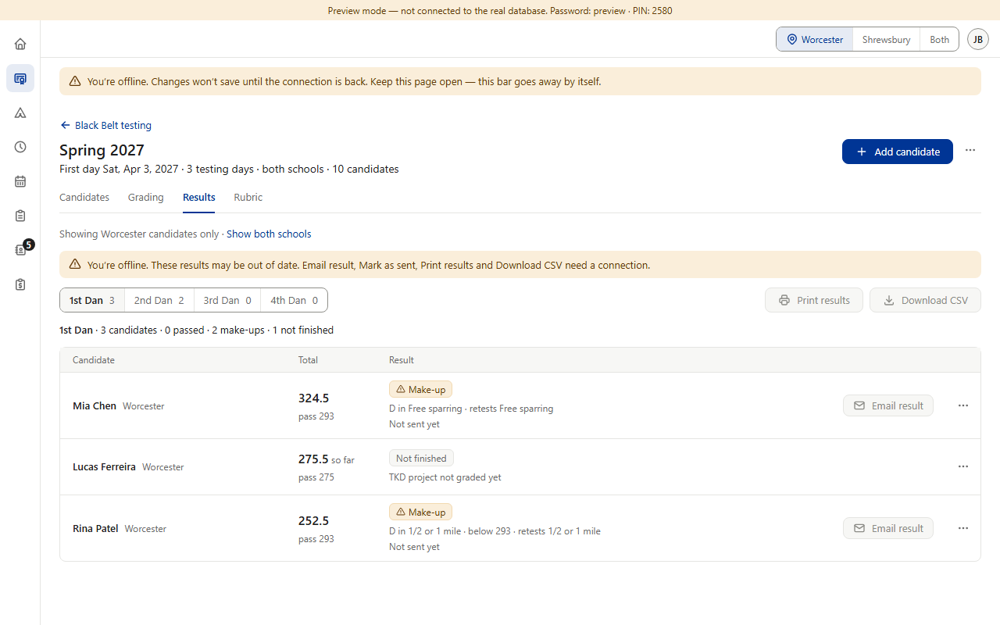
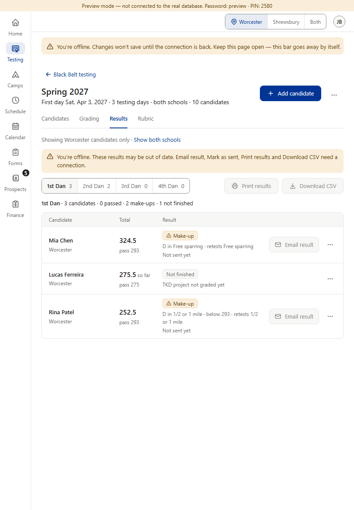
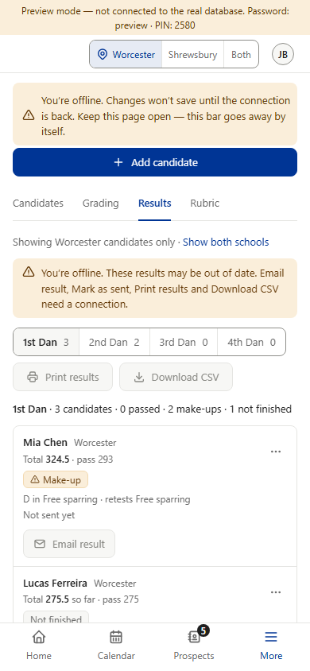
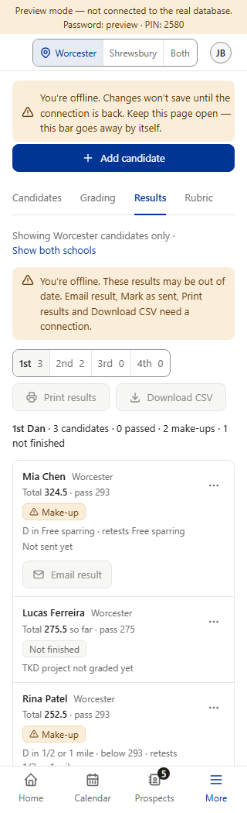
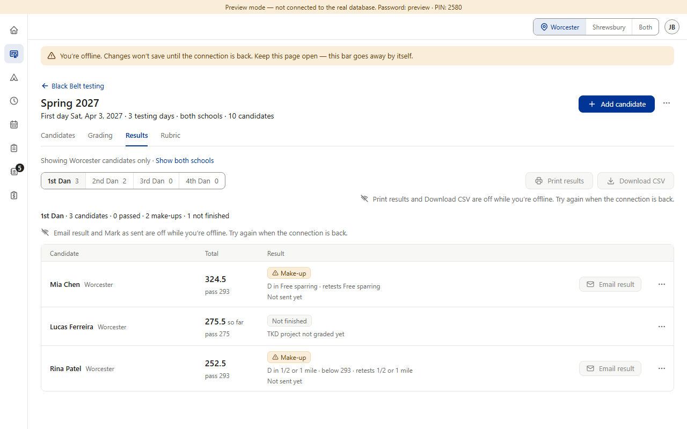
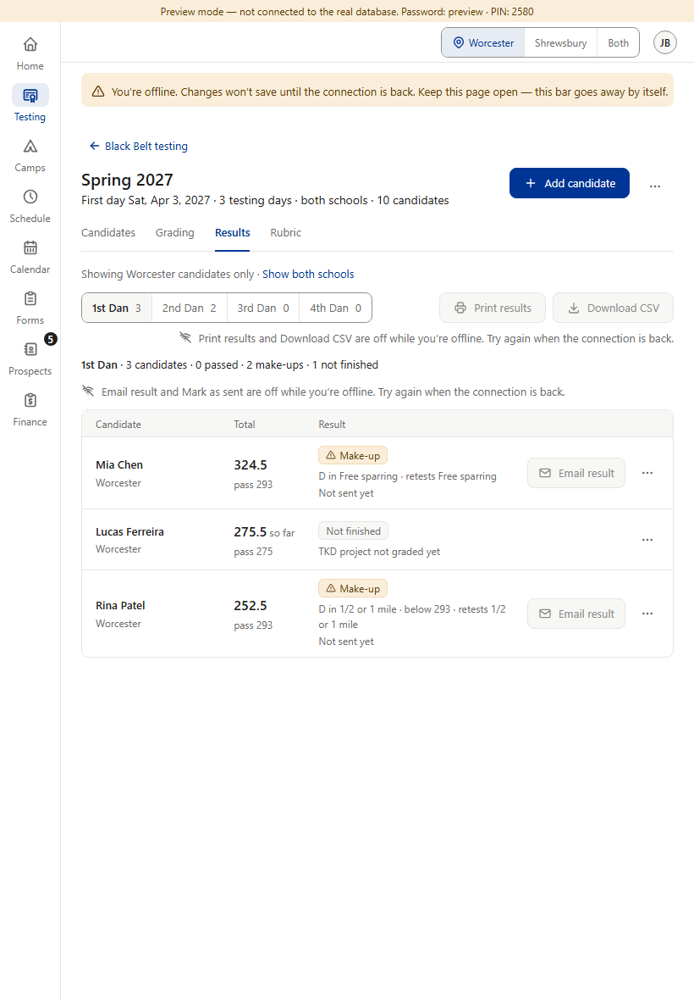
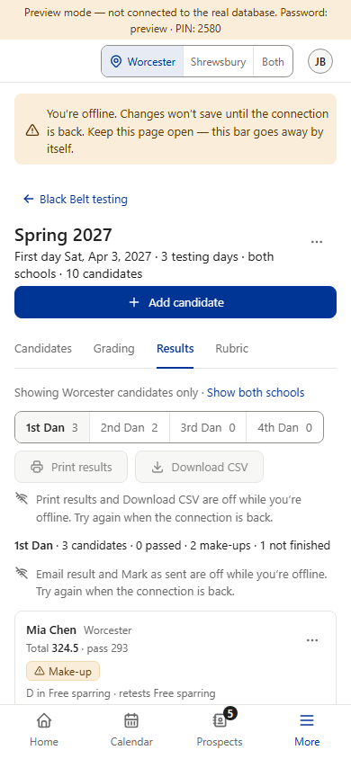
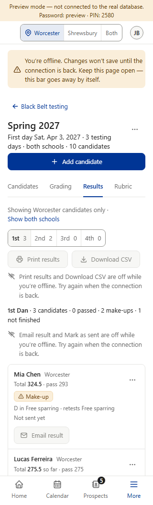

When the connection drops, the Results tab no longer draws its own amber bar. The one shared bar at the top of the page says it already. The four grayed controls each say why, in a gray line next to them.








What changes: the Results tab’s own “You’re offline…” bar is removed (rulebook v1.123, “A, fold it in”); the shared bar already shows on every page. Two gray lines are added, in the same look as the gray “Email result is off while private details are hidden” line that Results already has.
What stays: the controls are grayed exactly as now (they still do nothing while offline). Grading’s grade-by-grade offline line and its “couldn’t load the grades” bar are not touched. The last list stays on screen, and nothing is asked of the database while offline.
Where the words come from: no other section has an offline reason line yet (Star’s Results tab has none). The pattern is Star’s own gray line on Results, “Email result is off while private details are hidden. Email results at the desk.” (“X is off while Y.”). The ending follows the shared bar’s “…until the connection is back.” The small no-wifi icon is new, since the hidden-details line uses its own icon.